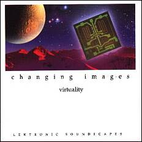

VIRTUALITY (CD 1992)
|
 2. Kyoto 5'32 3. Shivas Invention 6'20 4. But - I Know 7'04 5. Malaria 6'35 6. Lilith - the Black Moon 7'43 7. Cyberspace 7'20 8. Cloudwalk 5'59 9. The Moor 5'01 10. Dawn 8'57 Gesamtspielzeit 67'33 Equipment auf "Virtuality": Martin: Volker: |
Virtuality,
1992 CD Lectronic Soundscapes
LS-92003. " Virtuelle
Realitäten - Virtualitäten - ein aktuelles Thema im Zusammenhang mit
Cyberspace, der (In-)begriff virtueller Welten, der bekanntlich auf William
Gibsons Roman 'Neuromancer' zurückgeht und in
letzter Konsequenz viel weitreichendere Folgen mit
sich bringt, als sich heute auch nur erahnen läßt.
Und das nicht nur im Sinne von (von Science-Fiction Anhängern geliebten)
technischen Möglichkeiten, die heute noch den Charakter von Spielereien
haben, sondern der Begriff der Wirklichkeit selbst wird zunehmend
fragwürdiger. Aber war er es nicht immer schon? Wirklichkeit hat sehr viel
mit Wahrnehmung zu tun; die Summe unserer Wahrnehmungen läßt
erst Realität entstehen. Die scheinbar so klare Grenze zwischen unserer
Alltagsrealität und Scheinwelten wie Träume im Schlaf oder künstlichen
Realitäten, seien sie nun durch schamanische Ekstase, natürliche oder
chemisch hervorgerufene Psychosen oder Cyberspace hervorgerufen, verwischt
bei genauer Betrachtung. Was hat das nun mit unserer Musik zu tun? Einerseits
erzeugt fast jede Art von Musik, die ja auch mit Wahrnehmung zu tun hat, den
Hauch einer Illusion, einer Scheinwelt, die sich mit unserer normalen
Realität überlagert. Zum anderen findet sich diese Überlagerung in vielen
Stücken unserer Musik selbst: Die elektronischen, 'cyber'-artigen
Klänge und Strukturen überlagern sich mit 'virtuellen' - weil durch Keyboards
erzeugten - ethno- oder Natursounds, um gemeinsam
eine eigene Welt zu erzeugen. Man könnte sagen, mit 'Malaria' und 'Cyberspace'
haben wir noch eins draufgesetzt und sozusagen eine virtuelle Virtualität
erzeugt: 'Malaria' mit seiner tropischen Atmosphäre stellt nichts
anderes als einen fiebrigen, traumatischen und zugleich süßlichen und
zerstörerischen Zustand dar, wie ihn vielleicht ein an Malaria Erkrankter
haben könnte. 'Cyberspace' muß man wohl nicht erklären - das hineingezogenwerden in eine Maschine, das Sich-Auflösen in den Schaltkreisen eines Computers,
Einswerdung in einem androiden Zustand. 'Lilith
- der schwarze Mond'; dieser traumatische Anfangspart entstand
tatsächlich in einem Traum von mir, in dem ich diese Art Musik in einer
eigenartigen Traumsituation quasi erträumt hatte. Lilith - die mythologische
Göttin der Verführung, Rache und des unstillbaren Verlangens. In der
Astrologie bezeichnet man einen virtuellen (!) Punkt der Mondumlaufbahn mit
Lilith oder eben: der schwarze Mond. Die Musik mußte
entsprechend mystisch und zugleich geheimnisvoll verführerisch ausfallen. Es klingt fast so, als ob
wir einen überzogenen intellektuellen Anspruch hätten - das stimmt jedoch
nicht, uns macht es einfach Spaß, Musik zu machen. Unsere Stücke entstehen
meist beim Experimentieren, Improvisieren, wobei sich langsam ein Konzept,
ein Bild oder ein Gefühl entwickelt, das sich durch musikalische
Kommunikation immer weiter verdichtet. Ich verstehe Komponieren weniger als Verarbeitungsprozeß von gefühlsmäßigen Eindrücken,
sondern viel mehr als Erzeugen, Schaffen von Gefühlen und Eindrücken." Martin, 1992
|